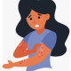

Psoriasis
Rx
1.Oint Fluocinolone 0.025% N=1
Or Oint Tacrolimus N=1
2.Oint Hydrocortisone 1% N=1
نکته: فلوسینولون هفته اول روزی 2بار هفته دوم روزی یکبار و سپس با بهبودی نسبی از یک کورتون ضعیف تر(هیدروکورتیزون) استفاده میکنیم
نکته: موراد خفیف از نوع موضعی و شدید از نوع خوراکی استفاده میشه(ارجاع شود)
نکته: برای صورت پماد تاکرولیموس تجویز کنید.
1️⃣ درماتیت تماسی
2️⃣ درماتیت آتوپیک
3️⃣ درماتیت سبورئیک
4️⃣ لیکن پلان
5️⃣ اونیکومایکوزیس ( تظاهر ناخن)
6️⃣ آرتریت reactive ( تظاهر مفصلی)
7️⃣ پتریازیس آلبا
8️⃣ پتریازیس روزه آ
lichen simplex chronicus 9️⃣
🔟 دیاپر راش
1️⃣1️⃣ تینه آ ( سر ، بدن و ...)
1️⃣2️⃣ سیفلیس
Gout and Pseudogout 1️⃣3️⃣